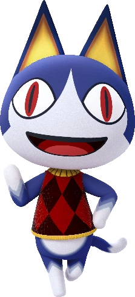

당신은... <낯선 고양이>입니다!
자유로운 영혼과 4차원적인 엉뚱한 면을 가진 당신은 주변 사람들에게 신비스러운 사람으로 보인답니다. 알 수 없는 사람이지만, 이상하게 사람들을 끌어들이는 매력이 있어요. 느긋한 성격으로 항상 휴식과 여유를 즐기며 자기만의 생각에 빠져사는, 엉뚱하지만 귀여운 당신은 <낯선 고양이>가 가장 잘 어울린답니다!
테스트 해보기